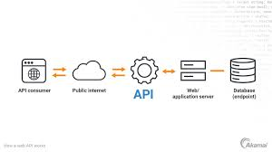
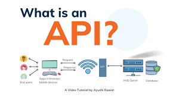
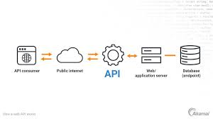
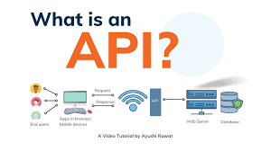

A Web API or Web Service API is an application processing interface between a web server and web browser. All web services are APIs but not all APIs are web services. REST API is a special type of Web API that uses the standard architectural style explained above.

 


